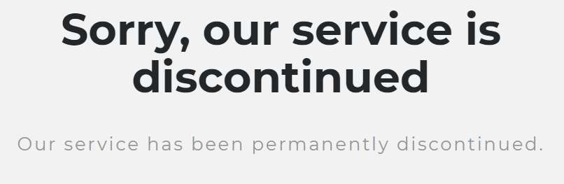
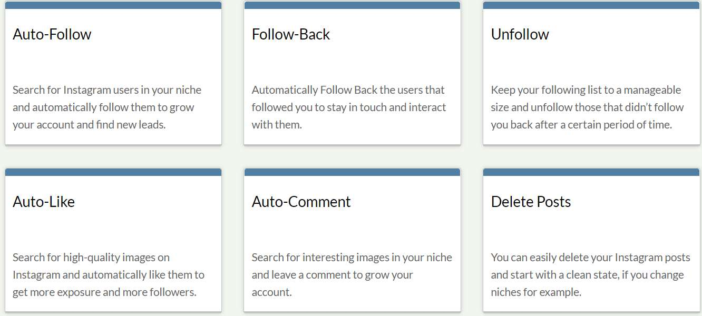

If you were active in the internet marketing world a couple of years ago, chances are you have heard about Massplanner. Since the shutdown, many marketers are scrambling to find an equal alternative.
In this article, we’ll talk about Massplanner, its features, why it was popular, and then move on to some of our recommended alternatives.
Before we get into that, let’s talk about why Massplanner was shut down.
Why Was Massplanner Shut Down?

At some point in 2017 when marketers tried to visit the Massplanner website they were met with the notice that says “Sorry, our service is discontinued”. It still remains today.
As you probably know, Instagram doesn’t want third-party tools using the words “Insta” or “Gram” in their names. This is one of the most common reasons for Instagram to file a lawsuit against Instagram bots.
On the other hand, Massplanner didn’t seem to violate that rule. However, after a closer look, it becomes quite clear why Instagram filed a lawsuit against Massplanner.
As it turns out, Massplanner not only has services to automate a wide range of Instagram activity but also create fake accounts using proxies. These fake accounts were basically sold and used as like-farms and whatnot, something that Instagram clearly doesn’t need.
In short, it broke too many of Instagram’s rules. Most bots can get away with breaking a couple, or at least working within a grey-area, but Massplanner went all out.
Combine that with the fact Massplanner was one of the most popular tools for black-hat marketers, it’s not surprising Instagram took action. Discussions about the tool are still quite popular on internet marketing forums, such as Warrior Forum and Black Hat World.
What Made Massplanner Special?
You’re probably wondering why this tool was so popular when there are so many other similar tools out there. From what I can tell, there are several reasons for that. For starters, Massplanner had so many features.
Such as:
- Automate activity on every social media platform (Twitter, Facebook, Linkedin, Instagram, etc)
- Auto-follow & Unfollow Users
- Schedule and Upload Content
- Mass-Account Creator
- Auto Comment
- Direct Message
- Auto Like
- And many others.
As you see, it was a full-scale Instagram bot, with almost every possible feature.
Keep in mind, not all the features were included in the core price.
How Did It Work?

Look, Massplanner was a software, a Windows application to be specific. You had to download and install it on your computer or a virtual private server.
You weren’t allowed to use the program on more than one computer and you were supposed to use a proxy to avoid detection. In other words, your computer needed to be on for the tool to work.
There are still a lot of tools out there that use a similar system, one that comes to mind is Jarvee. Read our detailed Jarvee review here.
Getting started with Massplaner was much the same as tools you might be familiar with now. Users would have to enter their Follow Sources, which are keywords, hashtags, or other users. These settings create a starting point for the bot.
Once you did that, all that’s left to do is hit the Start Auto Follow button and watch the live activity.
Massplanner catered more towards advanced marketers. It had a wide range of services that were not found in other Instagram bots, at least not at that time.
It also had plenty of filters. You could customize the settings of almost every action, including wait periods. When used correctly, Instagram would have a hard time figuring out if you’re using a bot or not.
Here are some of the filters:
- Wait between actions (set a custom time)
- Follow during certain hours of the day
- Follow a range of people
- Add random intervals to pause the bot
- Wait a certain amount of seconds between each follow
- A random sleep timer
- Add follow limits
- And much more.
How Much Did Massplanner Cost?
To start with, they offered a 5-day free trial.
After that, there were a handful of paid memberships to choose from, starting from $9.95 a month for the basic version. A six-month license costs $44.95.
There were also some add-on modules, such as Instagram Poster, InstaChat, Multi-Account Module, Bump, and many others. These were add-ons for specific social media platforms.
Overall, it wasn’t pricey. In fact, it was quite affordable, which may be why so many people were drawn to it.
What Happened When Massplanner Shutdown?
The news that Massplanner closed their doors came as a shock. Nobody was really expecting it, and many marketers were using the tool for their business.
Unfortunately, at that time, Instagram was cracking down on these kinds of tools, and many other tools had to close down as well. The people who were using Massplanner rushed to other tools, only to have those shut down as well.
You can tell how upset some people were by the number of discussions about this issue on internet marketing forums. Well, there some things we can learn from this situation.
What We Can Learn From This:
Truth be told, using any type of social media automation comes with risks. Granted, they can save you a lot of time as well, but nothing lasts forever.
It’s always best not to rely too heavily on social media automation tools. Instagram bots have their uses, but you shouldn’t depend on them entirely. At least have backup tools to fall on when one shuts down.
In my opinion, one of the reasons Massplanner shut down was because marketers were getting a bit too greedy and pushing the limits. They created and managed thousands of accounts with the tool, selling Instagram likes and other interactions to people online.
Too Many Spammers:
Essentially, Massplanner was the source of a lot of spam. Instagram doesn’t like spam. Not many people do. Massplanner was used to not only create thousands of fake accounts but manage those accounts too.
What ended up happening is various marketers had armies of accounts creating spam. It’s no wonder Instagram caught on quick.
Look, if you’re going to use an Instagram automation tool, take it really slow at first. New accounts need to keep the activity looking as human as possible. Don’t start spamming all the services at once.
There Are Always Risks:
And you also need to remember, even if you follow all the recommendations, and continue to use bots, there’s still the off chance that you’ll be blocked. Instagram doesn’t usually ban users for weird activity, not immediately at least, but repeat offenders will eventually be banned.
I think if Massplanner only offered a few services and places strict limits on its users, the company would probably still be up and running today. Then again, it probably wouldn’t have been as popular.
Overall, though, if you pay close attention to the tool’s tutorials and advice, then the chances of you running into trouble are minimal.
Looking for a Massplanner Alternative?
Now that you have a clear picture, here are alternatives to Massplanner.
The tool that is most similar to Massplanner is Jarvee, but it’s not something we recommend for complete beginners. Like Massplanner, it has a ton of features and settings which can be overwhelming for new marketers.
So what do we recommend?
Out of all the Instagram tools we love, here are two of our favorites:
1 – Kenji

What we like most about Kenji is that it keeps things simple. The platform can be accessed online, so there’s no need to download any apps, and it is very easy to setup.
Basically, all you have to do is type in your targets and toggle the services you want, that’s it. Setup can be completed in minutes. It’s also budget-friendly!
Click here to try a three-day trial.
2 – Upleap

Upleap is a unique platform. What it does is pair you with an account manager who generates Instagram activity on your behalf. It’s the closest thing to hiring a full-time social media marketer for your account.
The difference is Upleap is much cheaper, and you can easily track the performance inside your dashboard. Upleap is our favorite Instagram automation tool. Granted, it’s not the cheapest, but it’s well worth it.
3 – Later
Later is more of an Instagram manager than a bot. It doesn’t automate activity for you but it does allow you to schedule content. The platform has a really cool grid-style calendar that lets you schedule and publishes content for the entire year.
Although it’s not the best Massplanner alternative, it’s worth mentioning because it can really benefit your social media activities.
Here’s the deal:
The above Instagram automation tools aren’t as aggressive as Massplanner. Unlike Massplanner, these tools only work with Instagram, no other social media platforms. They also don’t have the account-creator that Massplanner was known for.
Nevertheless, if you’re looking to organically grow your Instagram account, with the help of some automation tools, then these two of your best choices.
Massplanner In Summary
To summarize, Massplanner was a decent bot. It provides a high level of customization and features that most bots today don’t have. However, marketers flooded to the tool and used it a bit too aggressively. It wasn’t long before it appeared on Instagram’s radar and they took action against it.
You’re probably thinking if this happened to Massplanner, then chances are it can happen again to any automation tool. That it may be true. There are always risks. I wouldn’t recommend relying too heavily on any single tool.
A couple of pointers to keep in mind:
It’s best to avoid tools with the words “Gram” or “Insta” in their names. These will likely be the first to go when Instagram starts the ban-waves. Secondly, keep away from ones that mass-create accounts or sell followers. You can’t go wrong with one of our recommendations.
There’s only so much a bot can do. You still need to be making quality content. Automation tools can help make the process easier, and save you time, but you’ll still need to do some work.
Thanks for taking the time to read this Massplanner review. I hope you learned something new and you choose one of our recommended Instagram automation tools. They’ll save you a lot of hassle!
Remember, when you use a tool that requires a lot of customization, it’s best to keep all the settings to the lowest possible, at least at first.
Good luck!